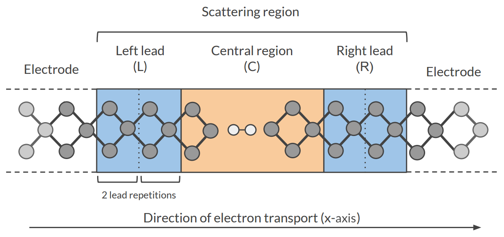
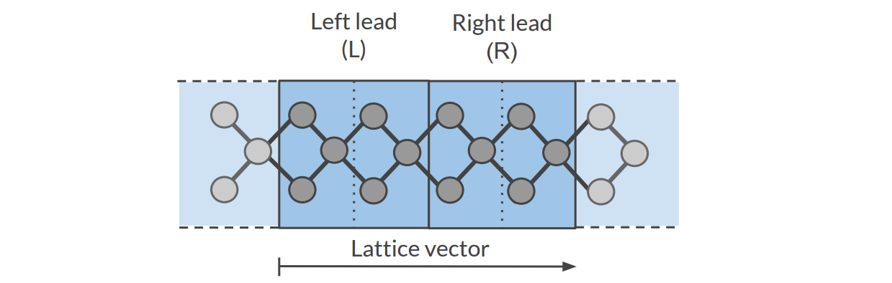
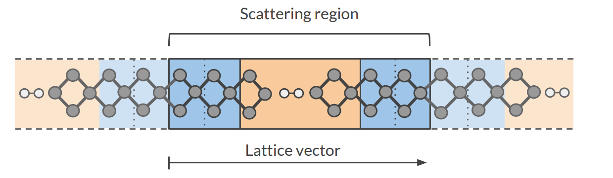

Electronic transport (NEGF)¶
Transport with NEGF in a nutshell¶
The Non-Equilibrium Green’s Functions formalism (NEGF) is a theoretical framework for modeling electron transport through nano-scale devices. Electron transport is treated as a one-dimensional coherent scattering process in the “scattering region” for electrons coming in from the electrodes:
Our goal is to compute the transmission function \(T(E)\), which describes the rate at which electrons of energy \(E\) are transferred from the left electrode to the right electrode by propagating through the scattering region. From the transmission function we can calculate the electric current for given Bias Voltage \(V\) applied between the electrodes:
where \(f(E)\) is the Fermi-Dirac distribution function for a given temperature, and \(\mu_L\) (\(\mu_R\)) is \(\epsilon_F + eV/2\) (\(\epsilon_F - eV/2\)), \(\epsilon_F\) being the Fermi energy of the electrodes.
The transmission function \(T(E)\) can be computed from the Green’s function of our system.
The Green’s function \(G(E)\) of the scattering region is obtained solving the following equation:
where \(S\) is the overlap matrix, \(H\) is the Hamiltonian and \(I\) is the identity matrix. The Hamiltonian is composed as follows (L, C and R denote the left lead, the central region and the right lead respectively):
The two self-energies \(\Sigma_L\) and \(\Sigma_R\) model the two semi-infinite electrodes.
The transmission function \(T(E)\) can be calculated from the Green’s function \(G(E)\) and the so-called coupling matrices \(\Gamma_L(E)\) and \(\Gamma_R(E)\) (which are related to \(\Sigma_L\) and \(\Sigma_R\)):
See also
PhD Thesis of Mahdi Ghorbani-Asl (DFTB-NEGF developer)
Simulations work flow¶
The computation of the transmission function \(T(E)\) within the DFTB-NEGF formalisms requires three individual simulations.
Tip
Use ADFInput (GUI) to set up your DFTB-NEGF calculation (see the DFTB-NEGF GUI tutorials)
- 1): DFTB leads calculation
A 1D-periodic DFTB calculation of the leads (StoreMatrices: yes, KSpace sampling 13):
The Hamiltonian matrices \(H_L\) and \(H_{R}\) and the Fermi energy of the electrode \(\epsilon_F\) are computed in this calculation (\(H_L\), \(H_{R}\) and \(H_{LR}\) are also used to compute the surface Green’s functions \(g_L\) and \(g_R\) of the semi-infinite electrodes).
- 2): DFTB scattering-region calculation
A a 1D-periodic DFTB calculation of the scattering region (StoreMatrices: yes, gamma-only, i.e., no KSpace sampling):
The Hamiltonian matrices \(H_{LC}\) and \(H_{RC}\) and \(H_{C}\) are computed in this calculation.
- 3): Conductance calculation
- The Conductance program computes the NEGF transmission function \(T(E)\) using the Hamiltonians and Overlap matrices from the previous two DFTB calculations.
Conductance input options¶
The Conductance program computes the transmission function using the NEGF approach. This is the input structure of the conductance program:
$AMSBIN/conductance <<EOF > conductance.out
EnergyGrid
Min value
Max value
Num value
Files
Leads /path/DFTB_lead_filename.rkf
Scattering /path/DFTB_scattering_filename.rkf
End
Technical
Eta value
OverwriteLeads [True|False]
SetOffDiagonalToZero [True|False]
End
end input
EOF
EnergyGridType: Block Description: Energy grid for Transmission Function MaxType: Float Default value: 5.0 Unit: eV Description: Max Energy (relative to Fermi energy) MinType: Float Default value: -5.0 Unit: eV Description: Min energy (relative to Fermi energy) NumType: Integer Default value: 200 Description: Number of energy values in which the interval Min-Max is subdivided
TechnicalType: Block Description: options describing technical parts of the calculation EtaType: Float Default value: 1e-05 Description: To avoid poles of the Green’s function, a small imaginary number is added to the energy overwriteLeadsType: Bool Default value: Yes Description: If true, Hamiltonians H_L and H_R are taken from the DFTB-leads calculation. If False, they are taken from the DFTB scattering-region calculation setOffDiagonalToZeroType: Bool Default value: Yes Description: If true, H_LR and S_LR are explicitly set to zero. If False, they are taken from the DFTB scattering-region calculation.
FilesType: Block Description: path of files LeadsType: String Default value: Description: Path (either absolute or relative) of the lead results file ScatteringType: String Default value: Description: Path (either absolute or relative) of the scattering region results
Miscellaneous remarks on DFTB-NEGF¶
- You should make sure that your results are converged with respect to the number of lead repetitions; the results should not change significantly if you increase the number of lead repetitions.
- It’s good practice to include at least one lead repetition in the central region.
- The transmission function is computed at zero bias voltage. The zero-bias transmission function is then used for computing the electric current for non-zero bias voltage.